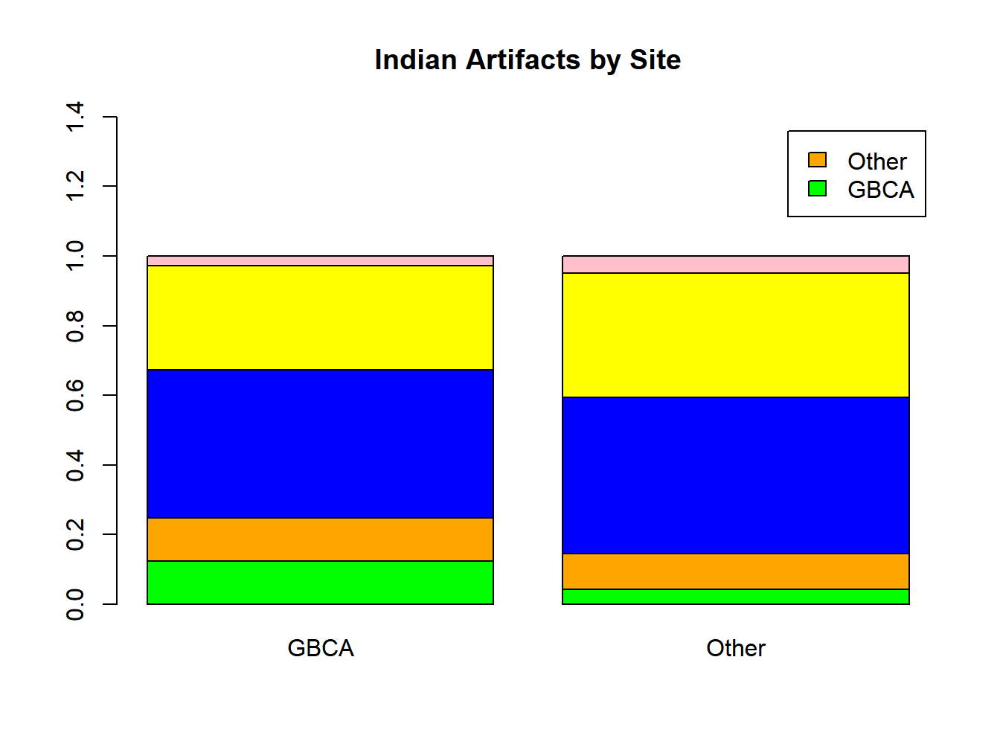

Chapter 8 Categorical Data Analysis
Recall that variables can be categorical or numeric. Chapters 4, 6, and 7 dealt with making inferences for quantitative responses. In this chapter, methods commonly used to analyze data when the response variable is categorical are introduced. First, consider estimating and testing proportions corresponding to a single binomial (2 possible outcomes) or multinomial (\(k>2\) possible outcomes) variable. Then, cases of testing for associations among two or more categorical variables are covered.
8.1 Inference Concerning a Single Variable
A single variable can have two levels, and counts are modeled by the Binomial distribution, or it can have \(k>2\) levels and counts are modeled by the Multinomial distribution. Note that the Binomial is a special case of the Multinomial, however there are many methods that apply strictly to binary outcomes.
8.1.1 Variables with Two Possible Outcomes
In the case of a binary variable, the goal is typically to estimate the true underlying probability of success, \(\pi\). The sample proportion \(\hat{\pi}=Y/n\) from a binomial experiment with \(n\) trials and \(Y\) successes has a sampling distribution with mean \(\pi\) and standard error \(\sqrt{\pi(1-\pi)/n}\). In large samples, the sampling distribution is approximately normal. One commonly used rule of thumb is that \(n\pi \geq5\) and \(n(1-\pi)\geq 5\). When estimating \(\pi\), the estimated standard error must be used, where \(\pi\) is replaced with \(\hat{\pi}\). Note that the standard error is maximized for a given \(n\) when \(\pi=1-\pi=0.5\), so a conservative case uses \(\pi=0.5\) in the standard error. The large-sample \((1-\alpha)100\%\) Confidence Interval for \(\pi\) and the sample size needed for a given margin of error, \(E\), are given below.
\[ (1-\alpha)100\% \mbox{CI for }\pi: \hat{\pi} \pm z_{\alpha/2}\sqrt{\frac{\hat{\pi}\left(1-\hat{\pi}\right)}{n}} \qquad E=z_{\alpha/2}\sqrt{\frac{\pi\left(1-\pi\right)}{n}} \quad \Rightarrow \quad n=\frac{z_{\alpha/2}^2\pi(1-\pi)}{E^2} \]
In small samples, the large-sample normal approximation does poorly in terms of coverage rates for \(\pi\). It has been seen that making an adjustment to the success count and the sample size performs well. This is referred to as the Wilson-Agresti-Coull method. Let \(y\) be the observed number of successes in the \(n\) trials, then the Confidence Interval is obtained as follows. Note that since \(z_{.025}=1.96 \approx 2\), for a 95% Confidence Interval, this can be thought of as adding 2 Successes and 2 Failures to the observed data (A. Agresti and Coull 1998).
\[ \tilde{y} = y+2 \quad \tilde{n} = n+ 4 \qquad \tilde{\pi} = \frac{\tilde{y}}{\tilde{n}} \qquad (1-\alpha)100\% \mbox{CI for }\pi: \tilde{\pi} \pm z_{\alpha/2}\sqrt{\frac{\tilde{\pi}\left(1-\tilde{\pi}\right)}{\tilde{n}}} \]
Example 8.1: Estimating Shaquille O’Neal’s Free Throw Success Probability
During Shaquille O’Neal’s NBA regular season career, he took 11252 free throws, successfully making 5935, so that \(\pi = 5935/11252=.5275\). Stringing out his within game free throw attempts into a sequence of \(1^s\) and \(0^s\), and taking 100000 random samples of size \(n=10\), the coverage rates for the two methods are 88.65% for the “traditional” large-sample method and 94.62% for the Wilson-Agresti-Coull (W-A-C) method. For the small-sample case, the adjustment performs very well. When the samples are of size \(n=30\), the coverage rates are 93.35% and 95.75%, respectively. For samples of size \(n=100\), they are 94.41% and 95.63%, respectively. Further, the mean widths of the 95% Confidence Intervals are narrower for the W-A-C method than for the traditional method as can be seen in Table 8.1.
| \(\pi\) | \(\hat{\pi}\) cover | \(\tilde{\pi}\) cover | \(\hat{\pi}\) width | \(\tilde{\pi}\) width | |
|---|---|---|---|---|---|
| n=10 | 0.5275 | 0.8865 | 0.9462 | 0.5848 | 0.5096 |
| n=30 | 0.5275 | 0.9335 | 0.9575 | 0.3512 | 0.3313 |
| n=100 | 0.5275 | 0.9441 | 0.9563 | 0.1947 | 0.1910 |
For the first sample of size \(n=10\), \(y=5\) free throws were successes and the following calculations are used to obtain the 95% Confidence Intervals for \(\pi\).
\[ \hat{\pi}=\frac{5}{10}=0.5 \qquad \qquad \widehat{SE}\{\hat{\pi}\}=\sqrt{\frac{0.5\left(1-0.5\right)}{10}}=0.158\] \[ 0.50 \pm 1.96(0.158) \equiv 0.50 \pm 0.310 \equiv (0.190,0.810) \]
\[ \tilde{y}=5+2=7 \quad \tilde{n} = 10+4 =14 \quad \tilde{\pi}=\frac{7}{14}=0.5 \quad \sqrt{\frac{0.5\left(1-0.5\right)}{14}} = 0.134 \] \[ 0.5 \pm 1.96(0.134) \equiv 0.5 \pm 0.263 \equiv (0.237, 0.763) \]
Both intervals contain \(\pi = 0.5275\).
\[ \nabla \]
A large-sample test of whether \(\pi=\pi_0\) can also be conducted. For instance, a test may be whether a majority of people favor a political candidate or referendum, or whether a defective rate is below some tolerance level.
\[ \mbox{2-tailed test: } H_0:\pi=\pi_0 \qquad H_A: \pi \neq \pi_0 \qquad \mbox{TS: } z_{obs}=\frac{\hat{\pi}-\pi_0}{\sqrt{\frac{\pi_0\left(1-\pi_0\right)}{n}}} \] \[ \mbox{RR: } |z_{obs}|\geq z_{\alpha/2} \qquad P=2P\left(Z\geq|z_{obs}|\right) \]
\[ \mbox{Upper-tailed test: } H_0:\pi\leq \pi_0 \qquad H_A: \pi > \pi_0 \qquad \mbox{TS: } z_{obs}=\frac{\hat{\pi}-\pi_0}{\sqrt{\frac{\pi_0\left(1-\pi_0\right)}{n}}}\]
\[ \mbox{RR: } z_{obs} \geq z_{\alpha} \qquad P=P\left(Z\geq z_{obs} \right) \]
\[ \mbox{Lower-tailed test: } H_0:\pi\geq \pi_0 \qquad H_A: \pi < \pi_0 \qquad \mbox{TS: } z_{obs}=\frac{\hat{\pi}-\pi_0}{\sqrt{\frac{\pi_0\left(1-\pi_0\right)}{n}}} \] \[ \mbox{RR: } z_{obs} \leq -z_{\alpha} \qquad P=P\left(Z\leq z_{obs} \right) \]
An exact test can be conducted by use of the binomial distribution and statistical packages by obtaining the exact probability that the count could be more extreme than the observed count \(y\) under the null hypothesis. See the examples below.
Example 8.2: NBA Point Spread and Over/Under Outcomes for 2014-2015 Regular Season
For each NBA game there is a “point spread” for bettors to wager on. If the home team is favored to win the game by 5 points, it must win by 6 or more points to “cover the spread,” if it loses the game or wins by less than 5 points, the home team loses the bet, and if it wins by 5 points, the bet is a tie or “push.” For the 2014-2015 regular season games, the home team covered the spread in 588 games, failed to cover the spread in 615 games, and “tied” the spread in 27 games. We treat these games as a sample of the infinite population of games that could be played among NBA teams, and eliminate the 27 “pushes.” The test is whether the true underlying probability that the home team covers is 0.50. Otherwise bettors could have an advantage over bookmakers. \(H_0:\pi=0.50\) versus \(H_A:\pi \neq 0.50\).
\[ y = 588 \qquad n=615+588=1203 \quad \hat{\pi}=\frac{588}{1203} =0.4888\] \[ SE\left\{\hat{\pi}\right\}_{H_0}=\sqrt{\frac{0.5(1-0.5)}{1203}} = 0.0144 \] \[ z_{obs} = \frac{0.4888-0.5}{0.0144} = -0.78 \qquad P=2P(Z\geq 0.78) = 2(0.2177)=0.4354 \]
There is no evidence of a “bias” (positive or negative) in terms of the home team performance against the spread. An exact test is given here. Under the null hypothesis, the expected value of \(Y\) is \(n\pi_0=1203(0.5)=601.5\). The observed \(y\) is 588, which is 13.5 below its expected value. Had \(y\) been 615, it would have been 13.5 above its expected value. The exact 2-tailed p-value is obtained as follows.
\[ P= P\left(Y\leq 588 | Y\sim Bin(1203,0.5)\right) + P\left(Y\geq 615 | Y\sim Bin(1203,0.5)\right)= \] \[= 0.22675 + 0.22675 = .4535 \]
A similar test can be done for the “Over/Under” bet. Bookmakers set a total score for the two teams, and if the combined points exceed this line the Over wins, if it falls short, the Under wins, and if it ties, it is a “Push.” For the Over/Under bet for that season, Under won 633 times, Over won 583 times, and there were 14 Pushes. Again, we eliminate the Pushes, and test \(H_0:\pi=0.50\) versus \(H_A:\pi \neq 0.50\), where \(\pi\) is the probability Over wins.
\[ y = 583 \qquad n=633+583=1216 \qquad \hat{\pi}=\frac{583}{1216} =0.4794\] \[SE\left\{\hat{\pi}\right\}_{H_0}=\sqrt{\frac{0.5(1-0.5)}{1216}} = 0.0143 \] \[ z_{obs} = \frac{0.4794-0.5}{0.0143} = -1.44 \qquad P=2P(Z\geq 1.44) = 2(.0749)=0.1498 \]
Again there is no evidence of a bias. An exact p-value is obtained below.
\[ P= P\left(Y\leq 583 | Y\sim Bin(1216,0.5)\right) + P\left(Y\geq 633 | Y\sim Bin(1216,0.5)\right)=\] \[ = 0.07997 + 0.07997 = 0.1599 \]
y.cov <- 588; n.cov <- 1203
y.ou <- 583; n.ou <- 1216
binom.test(y.cov, n.cov, p=0.5, alternative="two.sided")##
## Exact binomial test
##
## data: y.cov and n.cov
## number of successes = 588, number of trials = 1203, p-value = 0.4535
## alternative hypothesis: true probability of success is not equal to 0.5
## 95 percent confidence interval:
## 0.4601721 0.5174390
## sample estimates:
## probability of success
## 0.4887781##
## Exact binomial test
##
## data: y.ou and n.ou
## number of successes = 583, number of trials = 1216, p-value = 0.1599
## alternative hypothesis: true probability of success is not equal to 0.5
## 95 percent confidence interval:
## 0.4510292 0.5079521
## sample estimates:
## probability of success
## 0.4794408\[ \nabla \]
8.1.2 Variables with More than Two Possible Outcomes
We can generalize the case of two possible outcomes to \(k>2\) possible outcomes. The test involves computing a Chi-square statistic measuring the discrepancy between the observed counts of the outcomes and that expected under the null hypothesis of specified probabilities.
This test can also be used to determine the goodness of fit for a given set of data to a specified probability distribution. This type of test can be conducted as follows.
- Obtain a set of data \(\left(y_1,\ldots , y_n\right)\).
- Consider a family of distributions that may describe the data.
- Estimate the \(p\) parameter(s) of the hypothesized probability distribution based on the observed data.
- Break the data into \(k\) bins, that contain all of the observed values. This works best when there are at 5 observations per bin.
- Compute the observed counts for each bin \(n_j \quad j=1,...,k\).
- Compute the expected counts for each bin by multiplying the probability of that bin \(\pi_j\), by the sample size \(n\). This will typically require using a statistical package for the probabilities. \(E_j=n\pi_j\).
- Compute the Chi-square statistic that takes the squared difference between the observed and expected counts, divided by the expected counts. Sum these over all \(k\) bins.
- Under the null hypothesis that the data are from the specified probability distribution, the statistic will be approximately Chi-square with \(k-p-1\) degrees of freedom. Large values of the statistic are evidence against that hypothesis.
Example 8.3: Testing Poisson Distribution for London Bombings
In Chapter 3, we used the Poisson distribution to model the counts of London bombs observed in \(n=576\) sectors during World War II. There were 537 total bombs dropped, leading to an estimated mean of \(\hat{\lambda}=537/576=0.9323\) bombs per sector. Table 8.2 gives counts of 0,1,2,3,4+ for the 576 sectors, the expected counts based on the Poisson distribution with mean 0.9323 and the contributions to the Chi-square statistic. The degrees of freedom is \(k-p-1=5-1-1=3\) and the critical value with \(\alpha=0.05\) is \(\chi_{.05,3}^2=7.815\). The test statistic is 1.2947, and the p-value is \(P\left(\chi_{3}^2\geq1.2947\right)=.7304\). There is no evidence to claim that the distribution of bomb counts is not well described by a Poisson distribution.
| \(y\) | \(p(y)\) | Expected | Observed | \(\chi^2\) |
|---|---|---|---|---|
| 0 | 0.3936 | 226.7408 | 229 | 0.0225 |
| 1 | 0.3670 | 211.3905 | 211 | 0.0007 |
| 2 | 0.1711 | 98.5397 | 93 | 0.3114 |
| 3 | 0.0532 | 30.6228 | 35 | 0.6257 |
| 4+ | 0.0151 | 8.7062 | 7 | 0.3344 |
| Total | 1.0000 | 576.0000 | 576 | 1.2947 |
8.2 Introduction to Tests for Association for Two Categorical Variables
The data are generally counts of individuals or units, and are given in the form of an \(r\times c\) contingency table}. Throughout these notes, the rows of the table will represent the \(r\) levels of the explanatory variable, and the columns will represent the \(c\) levels of the response variable. The numbers within the table are the counts of the numbers of individuals falling in that cell’s combination of levels of the explanatory and response variables. The general set–up of an \(r\times c\) contingency table is given in Table 8.3.
| j=1 | j=2 | … | j=c | Total | |
|---|---|---|---|---|---|
| i=1 | n11 | n12 | … | n1c | n1+ |
| i=2 | n21 | n22 | … | n2c | n2+ |
| … | … | … | … | … | … |
| i=r | nr1 | nr2 | … | nrc | nr+ |
| Total | n+1 | n+2 | … | n+c | n++ |
Recall that categorical variables can be nominal or ordinal. Nominal variables have levels that have no inherent ordering, such as gender (male, female) or hair color (black, blonde, brown, red). Ordinal variables have levels that do have a distinct ordering such as reviewer’s assessment of a movie (negative opinion, mixed opinion, positive opinion).
In this chapter, the following cases are covered.
- \(2 \times 2\) tables (both variables have two levels)
- Both variables are nominal (or one is nominal, the other ordinal)
8.2.1 2 x 2 Tables
There are many situations where both the independent and dependent variables have two levels. One example is efficacy studies for drugs, where subjects are assigned at random to active drug or placebo (explanatory variable) and the outcome measure is whether or not the patient is cured (response variable). A second example is epidemiological studies where disease state is observed (response variable), as well as exposure to risk factor (explanatory variable). Drug efficacy studies are generally conducted as randomized clinical trials, while epidemiological studies are generally conducted in cohort (prospective) and case–control (retrospective) settings.
For this particular case, we will generalize the explanatory variable’s levels to exposed \(\left(E\right)\) and not exposed \(\left(\overline{E}\right)\), and the response variable’s levels as disease \(\left(D\right)\) and no disease \(\left(\overline{D}\right)\). These interpretations can be applied in either of the two settings described above and can be generalized to virtually any application. The data for this case will be of the form of Table 8.4.
| Disease Present | Disease Absent | Total | |
|---|---|---|---|
| Exposure Present | n11=y1 | n12=n1-y1 | n1+=n1 |
| Exposure Absent | n21=y2 | n22=n2-y2 | n2+=n2 |
| Total | n+1=y1+y2 | n+2=(n1+n2)-(y1+y2) | n++=n1+n2 |
In the case of drug efficacy studies, the exposure state can be thought of as the drug the subject is randomly assigned to. Exposure could imply that a subject was given the active drug, while non-exposure could imply having received placebo. In either type study, there are three measures of association commonly estimated and reported. These are the absolute risk (aka difference in proportions), the relative risk and the odds ratio.
These methods are also used when the explanatory variable has more than two levels, and the response variable has two levels. The methods described below are computed within pairs of levels of the explanatory variables, with one level forming the “baseline” group in comparisons.
8.2.1.1 Difference in Proportions: \(\pi_1-\pi_2\)
In many studies, the goal is to compare the Success probabilities for two groups. These studies can be based on large samples or small samples, and can be based on independent or paired samples.
For the large sample case, based on independent samples, the estimators \(\hat{\pi}_1=Y_1/n_1\) and \(\hat{\pi}_2=Y_2/n_2\) for the two groups are independent and have sampling distributions that are approximately normal. The relevant results are given below.
\[ E\left\{\hat{\pi}_1-\hat{\pi}_2\right\} = \pi_1-\pi_2 \quad SE\left\{\hat{\pi}_1-\hat{\pi}_2\right\}=\sqrt{\frac{\pi_1\left(1-\pi_1\right)}{n_1} + \frac{\pi_2\left(1-\pi_2\right)}{n_2}}\] \[\hat{SE}\left\{\hat{\pi}_1-\hat{\pi}_2\right\}=\sqrt{\frac{\hat{\pi}_1\left(1-\hat{\pi}_1\right)}{n_1} + \frac{\hat{\pi}_2\left(1-\hat{\pi}_2\right)}{n_2}} \]
\[ (1-\alpha)100\% \mbox{ CI for } \pi_1-\pi_2: \quad \left(\hat{\pi}_1-\hat{\pi}_2\right) \pm z_{\alpha/2} \hat{SE}\left\{\hat{\pi}_1-\hat{\pi}_2\right\} \] \[\quad \equiv \quad \left(\hat{\pi}_1-\hat{\pi}_2\right) \pm z_{\alpha/2} \sqrt{\frac{\hat{\pi}_1\left(1-\hat{\pi}_1\right)}{n_1} + \frac{\hat{\pi}_2\left(1-\hat{\pi}_2\right)}{n_2}} \]
In terms of testing the hypothesis \(H_0:\pi_1-\pi_2=0\), an adjustment is made to the standard error of \(\hat{\pi}_1-\hat{\pi}_2\). In this case the overall combined proportion of successes is obtained and used in the “pooled” standard error.
\[ \hat{\pi}=\frac{y_1+y_2}{n_1+n_2} \qquad \hat{SE}_p\left\{\hat{\pi}_1-\hat{\pi}_2\right\}=\sqrt{\hat{\pi}\left(1-\hat{\pi}\right)\left[\frac{1}{n_1} + \frac{1}{n_2}\right]} \]
The test statistic for testing \(H_0:\pi_1-\pi_2=0\) is given below with the usual rules for rejection regions and p-values for 2-tailed and 1-tailed tests based on the \(z\)-distribution.
\[ TS: z_{obs} = \frac{\hat{\pi}_1-\hat{\pi}_2}{\hat{SE}_p\left\{\hat{\pi}_1-\hat{\pi}_2\right\}} = \frac{\hat{\pi}_1-\hat{\pi}_2}{\sqrt{\hat{\pi}\left(1-\hat{\pi}\right)\left[\frac{1}{n_1} + \frac{1}{n_2}\right]}} \]
Example 8.4: Risk Taking After Large Financial Losses
An Australian natural experiment considered the effect of large losses on subsequent risk taking behavior (Page, Savage, and Torgler 2014). The study included a sample of \(n_1=94\) people who had been effected by the flood in Brisbane during 2011 and a sample of \(n_2=107\) people who had not been effected. The subjects in the experiment were given the choice between a certain $10 and a scratch card valued at $10, but with a maximum prize of $500,000. The scratch card is considered the “high risk” choice. Of the effected participants, \(y_1=75\) chose the scratch card, of the unaffected, \(y_2=53\) chose the scratch card.
\[ \hat{\pi}_1=\frac{75}{94}=.7979 \quad \hat{\pi}_2 =\frac{53}{107}=0.4953 \quad \hat{\pi}_1-\hat{\pi}_2=.7979-.4953=.3026 \] \[\hat{\pi}=\frac{75+53}{94+107}=\frac{128}{201}=0.6368 \]
\[ \hat{SE}\left\{\hat{\pi}_1-\hat{\pi}_2\right\}=\sqrt{\frac{.7979(.2021)}{94} + \frac{.4953(.5047)}{107}} = .0637 \] \[ .3026 \pm 1.96(.0637) \equiv .3026 \pm .1248 \equiv (.1778,.4274) \]
\[ \hat{SE}_p\left\{\hat{\pi}_1-\hat{\pi}_2\right\} = \sqrt{.6368(.3632)\left[\frac{1}{94} + \frac{1}{107}\right]}= .0680 \] \[z_{obs}=\frac{.3026}{.0680} = 4.451 \qquad P=2P(Z\geq 4.451) \approx 0 \]
This provides empirical evidence consistent with prospect theory that states that people adopt risk taking attitudes after losses.
y1 <- 75; n1 <- 94 ## Successes and Total for Group 1 (Affected by Flood)
y2 <- 53; n2 <- 107 ## Successes and Total for Group 2 (Unaffected)
prop.test(c(y1,y2),c(n1,n2),correct=F)##
## 2-sample test for equality of proportions without continuity correction
##
## data: c(y1, y2) out of c(n1, n2)
## X-squared = 19.804, df = 1, p-value = 8.58e-06
## alternative hypothesis: two.sided
## 95 percent confidence interval:
## 0.1777846 0.4273059
## sample estimates:
## prop 1 prop 2
## 0.7978723 0.4953271Note that R presents the “Z-test” as a Chi-square test (with 1 degree of freedom), \(z_{obs}^2=4.4502^2=19.804\). The p-values are identical for a 2-tailed test.
\[ \nabla \]
8.2.1.2 McNemar’s Test for Paired Designs
When the same units are being observed under both experimental treatments (or units have been matched based on some criteria), McNemar’s test can be used to test for treatment effects. The relevant subjects (pairs) are the ones who respond differently under the two conditions. Counts will appear as in Table 8.5.
| Trt2 Present | Trt2 Absent | Total | |
|---|---|---|---|
| Trt1 Present | n11 | n12 | n1+ |
| Trt1 Absent | n21 | n22 | n2+ |
| Total | n+1 | n+2 | n++ |
Note that \(n_{11}\) is the number of units that have the outcome characteristic present under both treatments, while \(n_{22}\) is the number having the outcome characteristic absent under both treatments. None of these subjects offer any information regarding the difference in treatment effects. The units that provide information are the \(n_{12}\) cases that have the outcome present under treatment 1, and absent under treatment 2; and the \(n_{21}\) units that have the outcome absent under treatment 1, and present under treatment 2. Note that treatment 1 and treatment 2 can also be “Before” and “After” treatment, or any two conditions.
A large-sample test for treatment effects can be conducted as follows.
- \(H_0:\) Pr(Outcome Present\(|\)Trt 1)=Pr(Outcome Present\(|\)Trt 2) \(\quad \Rightarrow \quad\) No Trt effect
- \(H_A:\) The probabilities differ (Trt effects - This can be 1-sided also)
- TS: \(z_{obs}= \frac{n_{12}-n_{21}}{\sqrt{n_{12}+n_{21}}}\)
- RR: \(|z_{obs}| \geq z_{\alpha/2}\) (For 2-sided test)
- p-value: \(P=2P(Z\geq |z_{obs}|)\) (For 2-sided test)
Often this test is reported as a Chi-square test. The statistic is the square of the z-statistic above, and its treated as a Chi-square random variable with one degree of freedom. The 2-sided z-test, and the Chi-square test are mathematically equivalent.
An exact test is based on the binomial distribution. Under the null hypothesis of no treatment effect, the count \(n_{12}\) is distributed binomial with \(n=n_{12}+n_{21}\) and \(\pi=0.5\). The P-value is computed as follows.
\[ H_0: \pi_1=\pi_2 \quad H_A:\pi_1 \neq \pi_2 \] \[P=2\min\left[P\left(Y \leq n_{12}\right),P\left(Y \geq n_{12}\right)\right] \quad Y\sim Bin\left(n=n_{12} + n_{21},\pi=0.5\right) \]
If trying to demonstrate that \(\pi_1 > \pi_2\), we would expect \(n_{12} > n_{21}\) and \(P=P\left(Y\geq n_{12}\right)\). If the goal is to demonstrate that \(\pi_1 < \pi_2\) , we would expect \(n_{12} < n_{21}\) and \(P=P\left(Y\leq n_{12}\right)\).
Example 8.5: Framing of Risky Outcomes
In one of many studies testing prospect theory, subjects were asked to make two decisions regarding risky gambles (D. Kahneman and Tversky 1984). The decision choices are given below.
- Decision 1: Choose between (A): a sure gain of $240 and (B): a 25% chance of winning $1000 and 75% chance of winning $0.
- Decision 2: Choose between (C): a sure loss of $750 and (D): a 75% chance of losing $1000 and a 25% chance of losing $0.
The results are given below. Decision 1 is a Positive frame, Decision 2 is Negative. Choices A and C are “sure thing” selections, B and D are “risky.”
- For 16 subjects, both sure things (A and C) were chosen.
- For 110 subjects, the Positive sure thing (A) and Negative risky bet (D) were chosen.
- For 4 subjects, the Positive risky bet (B) and Negative sure thing (C) were chosen.
- For 20 subjects, both risky bets (B and D) were chosen.
The data are summarized in Table 8.6.
| Neg/Sure | Neg/Risk | |
|---|---|---|
| Pos/Sure | 16 | 110 |
| Pos/Risk | 4 | 20 |
We can test whether the tendency to choose between a sure thing and risky bet depends on whether the choice is framed positive (gain) or negative (loss) based on McNemar’s test, since both outcomes are being observed on the same subjects.
- \(H_0:\) No differences in tendency to choose between sure thing and risky bet under the two frames
- \(H_A:\) The probabilities differ
- TS: \(z_{obs}= \frac{110-4}{\sqrt{110+4}}=\frac{106}{10.6771}=9.9278\)
- RR: \(|z_{obs}| \geq z_{.025}=1.96\) (For 2-sided test, with \(\alpha=0.05\))
- p-value: \(P=2P(Z\geq 9.9278) \approx 0\) (For 2-sided test)
Thus, we conclude that the tendencies differ. People tend to choose the sure thing when posed as a gain, and the risky bet when posed as a loss. The exact p-value is set-up below.
\[ P=2P\left(Y\geq 110 | Y\sim Bin(n=114,\pi=0.5)\right) \approx 0 \] In the following R code chunk, the mcnemar.test function in R is used to conduct the test on the matrix bet created below. By using the correct=F option, this Chi-square test gives identical conclusions as the \(z\)-test conducted above.
## [,1] [,2]
## [1,] 16 110
## [2,] 4 20##
## McNemar's Chi-squared test
##
## data: bet
## McNemar's chi-squared = 98.561, df = 1, p-value < 2.2e-16z.stat <- (bet[1,2]-bet[2,1])/sqrt(bet[1,2]+bet[2,1])
z.p <- 2*(1-pnorm(abs(z.stat),0,1))
binom.p <- 2*(1-pbinom(max(bet[1,2],bet[2,1])-1,bet[1,2]+bet[2,1],0.5))
bet.out <- cbind(bet[1,2], bet[2,1], z.stat, z.stat^2, z.p, binom.p)
colnames(bet.out) <- c("n12=+R/-S", "n21=+S/-R", "z", "z^2", "P(z)", "P(exact)")
round(bet.out, 4)## n12=+R/-S n21=+S/-R z z^2 P(z) P(exact)
## [1,] 110 4 9.9278 98.5614 0 0The Chi-square statistic from mcnemar.test is the square of the \(z\)-statistic. They give identical P-values for a 2-tailed test.
\[ \nabla \]
8.2.2 Nominal Explanatory and Response Variables
In cases where both the explanatory and response variables are nominal, the most commonly used method of testing for association between the variables is the Pearson Chi–Squared Test. In these situations, we are interested if the probability distributions of the response variable are the same at each level of the explanatory variable.
As we have seen before, the data represent counts, and appear as in Table 8.3. The \(n_{ij}\) values are referred to as the observed counts. If the variables are independent (not associated), then the population probability distributions for the response variable will be identical within each level of the explanatory variable, as in Table 8.7.
| j=1 | j=2 | … | j=c | Total | |
|---|---|---|---|---|---|
| i=1 | p1 | p2 | … | pc | 1 |
| i=2 | p1 | p2 | … | pc | 1 |
| … | … | … | … | … | … |
| i=r | p1 | p2 | … | pc | 1 |
| Total | p1 | p2 | … | pc | 1 |
The special case of \(2 \times 2\) tables has already been covered. Now we generalize to \(r\) groups (treatments) and \(c\) possible outcomes. To perform Pearson’s Chi-square test, compute the expected values for each cell count under the hypothesis of independence, and obtain a statistic based on discrepancies between the observed and expected values.
\[ \mbox{observed}=n_{ij} \qquad \qquad \mbox{expected}=E_{ij}=\frac{n_{i.}n_{.j}}{n_{..}} \]
The expected values represent how many units would have fallen in cell \((i,j)\) if the probability distributions of the response variable were the same for each level of the explanatory (grouping) variable. They apply the marginal proportion of cases in column \(j\), \(n_{.j}/n_{..}\) to the number of units in row \(i\), \(n_{i.}\). The test is conducted as follows.
- \(H_0:\) No association between the explanatory and response variables (see Table 8.7).
- \(H_A:\) Explanatory and response variables are associated
- TS: \(X_{obs}^2 = \sum_{i,j} \frac{\left(n_{ij} - E_{ij}\right)^2}{E_{ij}}\)
- RR: \(X_{obs}^2 > \chi^2_{\alpha, (r-1)(c-1)}\)
- p-value: \(P=P(\chi^2_{(r-1)(c-1)} \geq X_{obs}^2)\)
If the Chi-square test rejects the null hypothesis, standardized (adjusted) residuals can be used to determine which cells are the “cause” of the association between the variables. These are like Z-statistics. Generally, standardized residuals larger than 2 or 3 in absolute values are considered to be evidence against independence in that cell.
\[ R_{ij} = \frac{n_{ij}-E_{ij}}{\sqrt{E_{ij}\left(1-\frac{n_{i.}}{n_{..}}\right)\left(1-\frac{n_{.j}}{n_{..}}\right)}} \]
Example 8.6: Projectile Points in the U.S. Northern Great Basin
A study compared two groups of locations in the northern Great Basin in south central Oregon and northwestern Nevada (Middleton et al. 2014). The locations were classified into \(r=2\) groups as Great Basin Carved Abstract sites (GBCA) and other sites (Fort Rock Basin, Chewaucan-Abert Basin, Steens Mountain, and Massacre Lake). The projectiles were classified by their cultural period into \(c=5\) categories (Paleoindian, Early Archaic, Middle Archaic, Late Archaic, and Late Prehistoric). While the cultural period may be classified as ordinal, the authors conducted the analysis with Pearson’s Chi-square test, as is often done.
The observed and expected values are given in Table 8.8 along with the Chi-square statistic, p-value, and standardized (adjusted) residuals. A stacked bar chart shows the differences in the period distributions by site. Representative calculations are given below.
proj <- matrix(c(205,98, 208,246, 709,1064, 497,851, 48,115), ncol=5)
colnames(proj)<- c("paleoind", "early arch", "mid arch", "late arch",
"late preh")
rownames(proj) <- c("GBCA", "Other")
barplot(t(prop.table(proj,1)),beside=F,
legend=rownames(proj), col=c("green", "orange", "blue", "yellow", "pink"),
main="Indian Artifacts by Site", ylim=c(0,1.40))
Figure 8.1: Stacked Bar Chart for Projectile Point Cultural period by location
##
## Pearson's Chi-squared test
##
## data: proj
## X-squared = 112.29, df = 4, p-value < 2.2e-16proj.out <- rbind(proj, proj.X2$expected, proj.X2$stdres)
colnames(proj.out)<- c("paleoind", "early arch", "mid arch", "late arch",
"late preh")
rownames(proj.out) <- c("GBCA Obs", "Other Obs",
"GBCA Exp", "Other Exp",
"GBCA StdRes", "Other StdRes")
knitr::kable(proj.out, digits=2,
caption="Indian Artifacts by Site: Observed, Expected and Standardized (adjusted) Residuals",
booktabs=TRUE)| paleoind | early arch | mid arch | late arch | late preh | |
|---|---|---|---|---|---|
| GBCA Obs | 205.00 | 208.00 | 709.00 | 497.00 | 48.00 |
| Other Obs | 98.00 | 246.00 | 1064.00 | 851.00 | 115.00 |
| GBCA Exp | 124.99 | 187.28 | 731.40 | 556.08 | 67.24 |
| Other Exp | 178.01 | 266.72 | 1041.60 | 791.92 | 95.76 |
| GBCA StdRes | 9.71 | 2.10 | -1.44 | -4.00 | -3.13 |
| Other StdRes | -9.71 | -2.10 | 1.44 | 4.00 | 3.13 |
The row (site), column (period), and overal totals are given below.
\[ n_{1.}=205+208+709+497+48=1667 \quad n_{2.}=2374 \quad n_{..}=4041\]
\[n_{.1}=205+98=303 \quad n_{.2}=454 \quad n_{.3}=1773 \quad n_{4.}=1348\quad n_{5.}=163 \]
Overall, the proportions of artifacts from the \(c=5\) cultural periods are as follow.
\[ j=1:\frac{303}{4041}=.0750 \quad j=2: .1123 \quad j=3: .4388 \quad j=4: .3336 \quad j=5: .0403\]
These proportions are applied to the row totals to obtain the expected counts under the hypothesis of no association between site and cultural period.
\[ E_{11} = \left(\frac{303}{4041}\right)(1667)=124.99 \qquad E_{21}=\left(\frac{303}{4041}\right)(2374)=178.01 \quad \cdots \]
\[\cdots \quad E_{15} = \left(\frac{163}{4041}\right)(1667)=67.24 \qquad E_{25}=\left(\frac{163}{4041}\right)(2374)=95.76 \]
The test of whether there is an association between site and cultural period is conducted below.
\(H_0\):Site and Cultural Period are independent vs \(H_A\): Site and Cultural Period are associated.
\[ \mbox{TS: } X_{obs}^2=\sum_{i=1}^2\sum_{j=1}^5 \frac{\left(n_{ij}-E_{ij}\right)^2}{E_{ij}} = \frac{(205-124.99)^2}{124.99} + \cdots + \frac{(115-95.76)^2}{95.76} = \]
\[ = 51.22+ \cdots + 3.87 = 112.29 \] \[ \mbox{RR: } X_{obs}^2 \geq \chi^2_{.05,(2-1)(5-1)}=9.488 \qquad P=P\left(\chi^2_4 \geq 112.29\right) < .0001 \]
The standardized (adjusted) residuals (SAR) for the GBCA sites during the Paleoindian period is +9.71 and for other sites in that period is -9.71. There are many more artifacts during that period in the GBCA and many fewer in other sites than would be expected under independence.
For the Late Archaic period there were more artifacts from the other sites than would be expected (SAR=+4) and the same for the Late Prehistoric period (SAR=+3.13).
The calculations for the Paleoindian period are given below.
\[ R_{11} = \frac{205-124.99}{\sqrt{124.99(1-1667/4041)(1-303/4041)}} = \frac{80.01}{8.24}=9.71 \] \[ R_{12} = \frac{98-178.01}{\sqrt{178.01(1-2374/4041)(1-303/4041)}} = \frac{-80.01}{8.24}=-9.71 \]
\[ \nabla \]